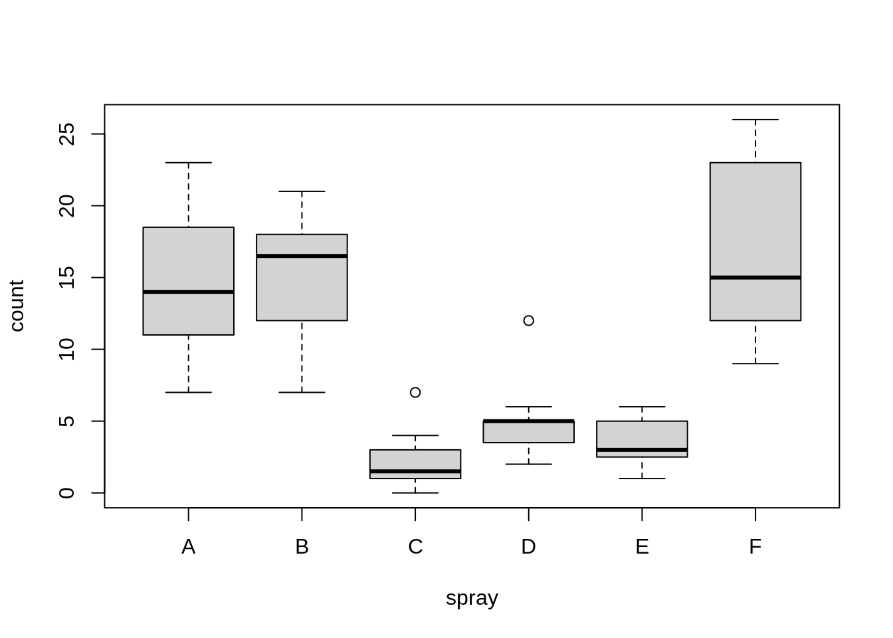
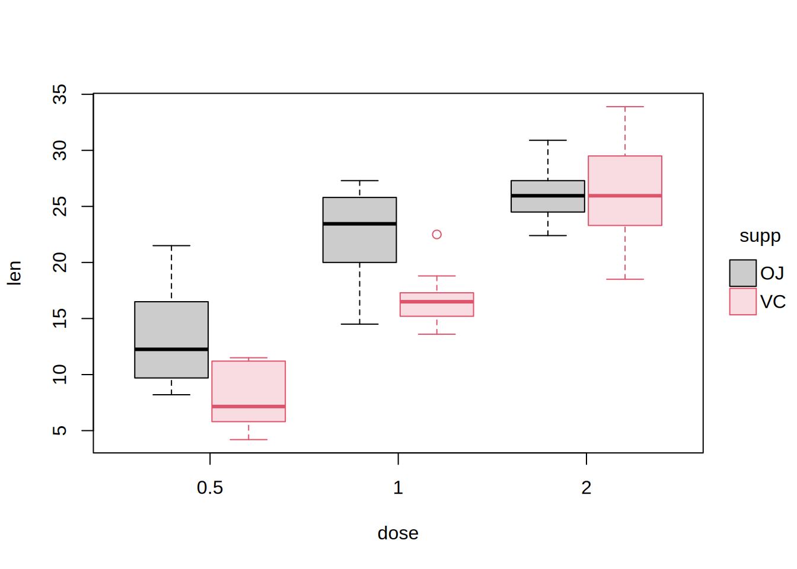
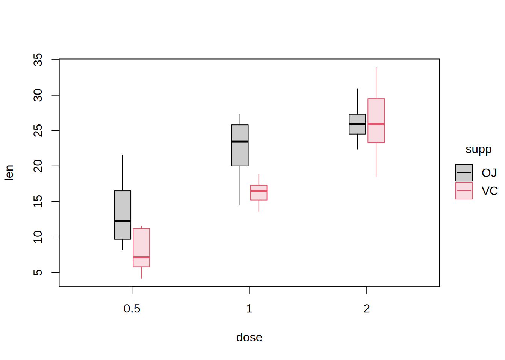

library("tinyplot")
# "boxplot" type convenience string
tinyplot(count ~ spray, data = InsectSprays, type = "boxplot")
# Note: Specifying the type here is redundant. Like base plot, tinyplot
# automatically produces a boxplot if x is a factor and y is numeric
tinyplot(count ~ spray, data = InsectSprays)
# Grouped boxplot example
tinyplot(len ~ dose | supp, data = ToothGrowth, type = "boxplot")
# Use `type_boxplot()` to pass extra arguments for customization
tinyplot(
len ~ dose | supp, data = ToothGrowth, lty = 1,
type = type_boxplot(boxwex = 0.3, staplewex = 0, outline = FALSE)
)